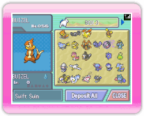
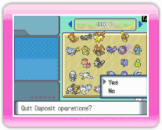
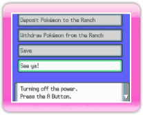

|
13
|
Deposit
Pokémon
|
 |
|
Before you deposit any Pokémon to the Ranch, please read "12. Connect to DS."  DS screen Select "Deposit Pokémon to the Ranch" on the DS main menu. The screen shown to the right will be displayed.
 DS screen Once you finish depositing Pokémon, select "Close." A message will pop up, "Quit Deposit operations?" Select "Yes" to go back to the DS main menu.  DS screen When you select "See ya!" in the DS main menu, a message pops up, "Would you like to save and quit?" Select "Yes" to end the connection. If the screen displays the message, "Turning off the power."
Press |

 to exit.
to exit. |
 |
 |